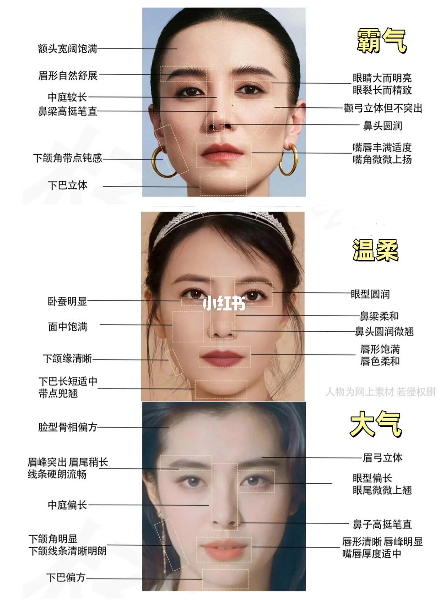
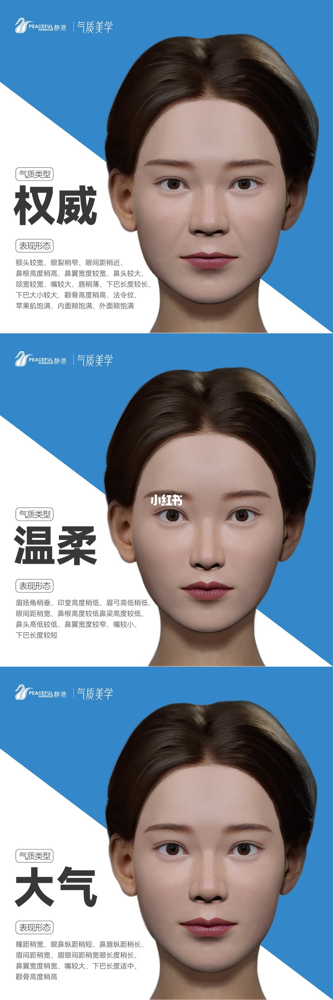

图文实录 · 小红书 · 祝愉勤聊气质
权威感、温柔感与御姐风：正向气质解读
笔记把「看起来强势、看起来温柔、看起来大方」拆成两组对照，都按观感来写，不是测量结论。第 1 页用三张真人标注「霸气、温柔、大气」。第 2 页用三张三维头像改写成「权威、温柔、大气」，并列相对宽窄和高低。标题里的「御姐风」两页都没有单独成栏。
1/2
三张真人：霸气、温柔、大气

上栏大字是「霸气」。左侧写：额头宽阔饱满，眉形自然舒展，中庭较长，鼻梁高挺笔直，下颌角带点钝感，下巴立体。右侧写：眼睛大而明亮，眼裂长而精致，颧弓立体但不突出，鼻头圆润，嘴唇丰满适度，嘴角微微上扬。
中栏大字是「温柔」。左侧写：卧蚕明显，面中饱满，下颌缘清晰，下巴长短适中、带点兜翘。右侧写：眼型圆润，鼻梁柔和，鼻头圆润微翘，唇形饱满，唇色柔和。旁边小字写「人物为网上素材 若侵权删」。
下栏大字是「大气」。左侧写：脸型骨相偏方，眉峰突出、眉尾稍长、线条硬朗流畅，中庭偏长，下颌角明显，下颌线条清晰明朗，下巴偏方。右侧写：眉弓立体，眼型偏长，眼尾微微上翘，鼻子高挺笔直，唇形清晰、唇峰明显，嘴唇厚度适中。
2/2
三张三维头像：权威、温柔、大气

蓝底，三张头像上下排列。每张旁边都有「气质类型」和「表现形态」。页眉能认出「静港」和「气质美学」，前面的英文品牌名无法确认。
权威的表现形态写的是：额头较宽，眼裂稍窄，眼间距稍近，鼻根高度稍高，鼻翼宽度较宽，鼻头较大，颌宽较宽，嘴较大，唇稍薄，下巴长度较长，下巴大小较大，颧骨高度稍高，法令纹，苹果肌饱满，内面颊饱满，外面颊饱满。
温柔的表现形态写的是：眉扬角稍垂，印堂高度稍低，眉弓高低稍低，眼间距稍宽，鼻根高度较低、鼻梁高度较低，鼻头高低较低，鼻翼宽度较窄，嘴较小，下巴长度较短。
大气的表现形态写的是：瞳距稍宽，眼鼻纵距稍短，鼻唇纵距稍长，眉间距稍宽，眉眼间距稍宽、眼长度稍长，鼻翼宽度稍宽，嘴较大，下巴长度适中，颧骨高度稍高。
汇总
两页是两套标签，不能合成一张脸
结论：这是一篇正向气质分类。第 1 页用真人五官标注把强势、柔和、方正分开；第 2 页用相对宽窄把「权威、温柔、大气」写成清单。支撑页是 1/2 和 2/2。两页都没有毫米、角度或比例公式。
同一组「看起来强势」的眼睛，两页说法对不上。第 1 页霸气写眼睛大、眼裂长；第 2 页权威写眼裂稍窄、眼间距稍近。第 1 页霸气写唇丰满、嘴角上扬；第 2 页权威写嘴较大、唇稍薄，并写到法令纹。合并成「权威脸长这样」会把两套观察贴到同一张脸上。
边界：标题里的御姐风没有单独的图。第 1 页用的是「霸气」，第 2 页用的是「权威」，图上没有写二者等同。这些词是笔记的观感分类，不是科学定论，也不能据此判断性格或能力。人物注明为网上素材，不是同一个人的前后对照。